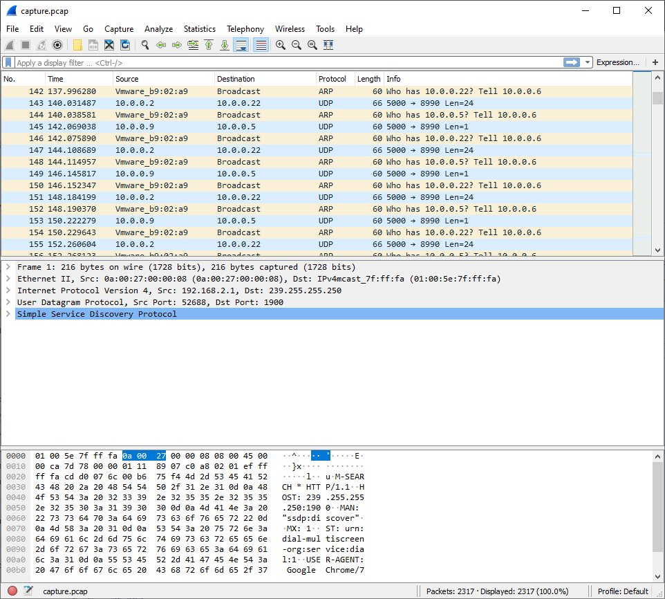
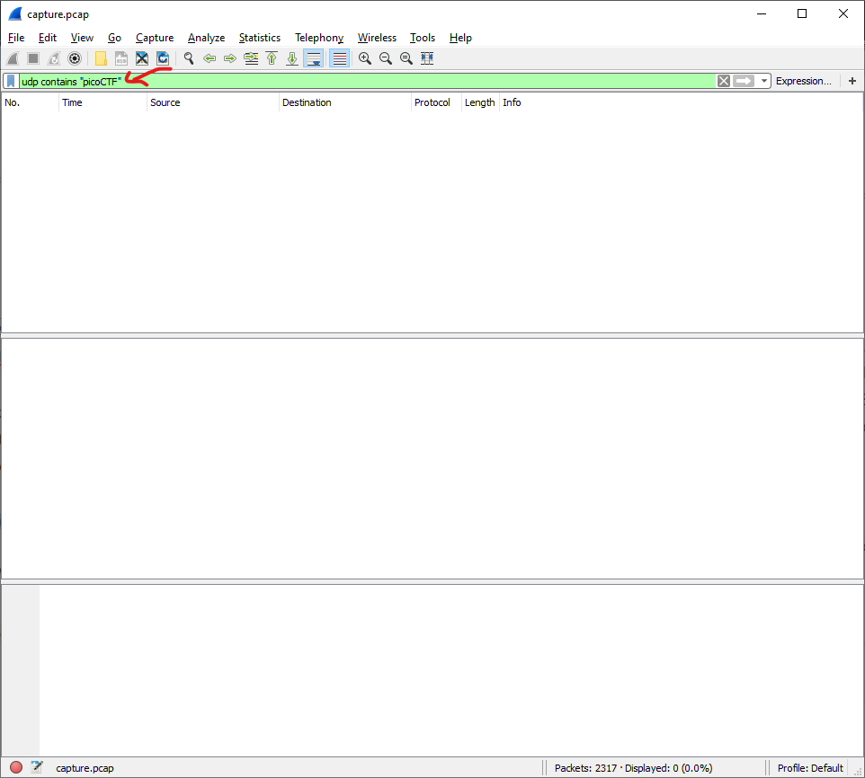
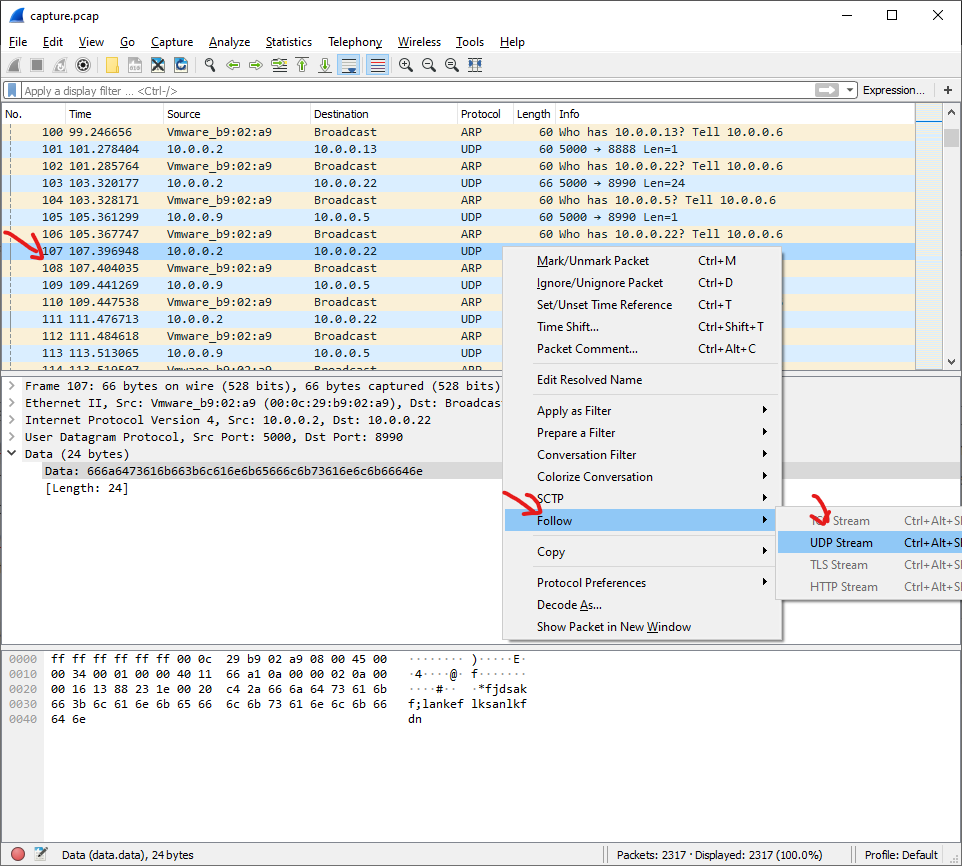
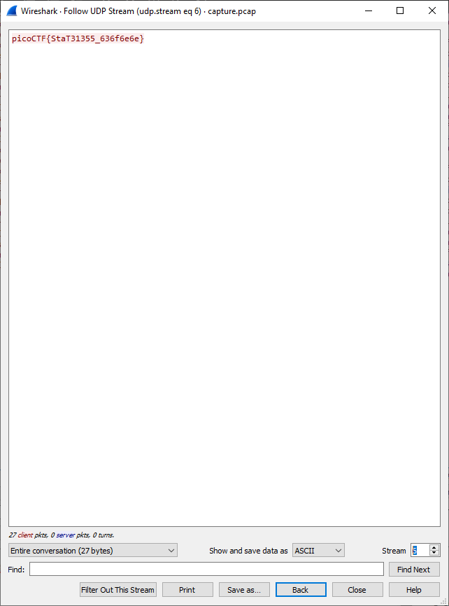

PCAP — Flag in UDP payload
Challenge débutant : retrouver un flag caché dans une capture réseau.
Catégorie : Forensics
Niveau : Beginner
Outil : Wireshark
Technique : filtres • streams • payload
Contexte
On reçoit un fichier .pcap (capture réseau). L’objectif est de retrouver un message “flag-like” envoyé sur le réseau, souvent en clair.

Ouverture du fichier PCAP dans Wireshark
Approche
- Ouvrir le PCAP dans Wireshark
- Comprendre rapidement les protocoles dominants (UDP/TCP/DNS/HTTP…)
- Filtrer pour réduire le bruit
- Suivre un flux/stream et lire le contenu
Étapes (résolution)
1) Filtrer UDP
udp

Filtre UDP appliqué (réduction du bruit)
2) Chercher une signature de flag (ex: “flag{” / “CTF{” / mot clé)
udp contains "flag"
On clique un paquet intéressant et on regarde le contenu : Packet Details / Packet Bytes / champ “Data”.

Paquet sélectionné : payload contenant le flag (zone surlignée)
3) Suivre le flux si besoin (si le message est réparti)
Right click → Follow → UDP Stream

Fenêtre “Follow UDP Stream” (reconstitution du message)
Résultat
Le flag est récupéré dans le contenu du stream / payload. Pour ton portfolio, tu peux afficher un résultat “propre” comme :
FLAG{PCAP_UDP_PAYLOAD_FOUND}
Preuve finale : flag visible dans Wireshark
Ce que j’ai retenu
- La réussite vient